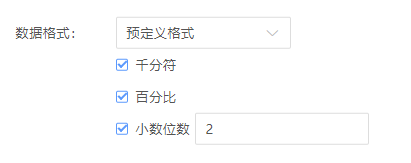
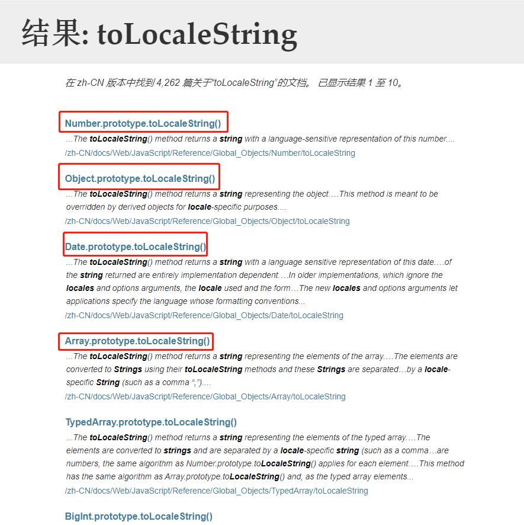

今天在处理一个数字的格式显示问题时，遇到下面的一些需求：
如下图，如果勾选的话就使能该项设置。

百分比和小数位数比较好解决，百分比只需要在源数字后面加两个零再加上百分号；小数只需要在小数点后面加零即可。最主要的是千分符的处理，好，就来说千分符。
数字千分符的处理有很多处理方案，最主要的有下面几种。
思路：
将数字转换成字符串，然后倒序遍历取值，每取3个字符插入一个,逗号，直到遍历到第一个字符。
代码很简单，如下：
function numberFormat(num) {
let result = '';
let count = 1;
let nums = num.toString();
for (let i = nums.length - 1; i >= 0; i--) {
result = nums.charAt(i) + result;
if (!(count % 3) && i != 0) {
result = ',' + result;
}
count++;
}
return result;
}
numberFormat(12345678); // 12,345,678思路：
该正则的思路就是从数字的第一个字符开始找，找到满足该数字后面的数字个数为3的倍数的这个数字，然后在该数字替换成数字,的形式，然后继续往下找......
语法如下：
let regExp = /(\d)(?=(\d{3})+$)/g;示例：
String(12345678).replace(/(\d)(?=(\d{3})+$)/g, "$1,");解释：
首先\d 表示数字，然后以?=(\d{3})+ 结尾的即满足条件。所以最主要是这个 ?=(\d{3})+ 表达式。
正向预测 ?=n，表示匹配任何其后紧接指定字符串 n 的字符串。 再结合\d 表示，如果一个数字后面满足字符串n这个规则，那么就将匹配到的这个数字（假如是1）替换成1,。
所以现在的问题是字符串n这个规则是什么，是(\d{3})+ 这个东西，这个表示数字的个数为3的倍数（倍数为1~n之间）。
所以整个表达式的意思就是：从第一个数字开始看起，看这个数字后面的数字个数是不是3的倍数，是的话将这个数字（假如是1）替换成1,的形式，然后继续下一个数字直到结尾。
说明：
g是表示全局匹配的修饰符，全局匹配指查找所有匹配而非在找到第一个匹配后停止。$是表示结尾的量词，如n$，匹配的是任何以n为结尾的字符串。\d是查找数字的元字符。n{X}是匹配包含 X 个 n 的序列的字符串的量词。+ 匹配前面的子表达式一次或多次;* 匹配前面的子表达式0次或多次。?匹配前面的子表达式0次或1次，或指明一个非贪婪限定符。?=n正向预查，用于匹配任何其后紧接指定字符串 n 的字符串。match() String对象的方法，作用是找到一个或多个正则表达式的匹配。replace() String对象的方法，作用是替换与正则表达式匹配的子串。\B是表示匹配非单词边界的元字符，与其互为补集的元字符是\b，表示匹配单词边界。根据 MDN 解释， number.toLocaleString() 方法返回这个数字number在特定语言环境下的表示字符串。
简单的使用：
var number = 3500;
console.log(number.toLocaleString()); // 3,500我们直接调用该函数就可以得到问题的结果。但其实，该函数的功能不止于此，这就需要分析它的参数了。
语法：
numObj.toLocaleString([locales [, options]])locales： （可选）表示以哪国的数字表示形式。options: （可选）表示数字的显示样式（比如要不要显示小数位数，显示几位？要不要显示百分比？等等）一般可以填下面几个数值：
en-US : 美国（ 中文场景下默认值）zh-CN : 中国en-GB : 英国ko-KR : 韩国ar-EG : 阿拉伯de-DE : 德国en-IN : 印度ja-JP : 日本...options对象的属性就有很多了，下面列举一个常用的属性。
style : 默认为 decimal ，表示十进制格式， currency表示货币格式, percent表示百分比格式。currency ： 如果style设置为currency，则该属性设置货币符号（USD 表示美元, EUR 表示欧元, or CNY是人民币等等，更多符号参考链接： https://www.currency-iso.org/en/home/tables/table-a1.html ）useGrouping : 是否使用千分符，默认为trueminimumIntegerDigits ：设置整数最小位数（当整数位数不足时，在前面加0）minimumFractionDigits ： 设置小数数最小位数。而这些属性不仅可以满足文章开头提出的问题，也可以满足我们日常常用到的数字的格式表示。那么我们就来康康怎么使用吧！
示例：
Number(123).toLocaleString('zh-CN', {
style: 'decimal',
useGrouping: false,
minimumIntegerDigits : 5,
minimumFractionDigits: 2
}) // 00123.00Number(123).toLocaleString('zh-CN', {
style: 'percent',
minimumFractionDigits: 2
}) // 12,300.00%Number(123).toLocaleString('zh-CN', {
style: 'currency',
currency: 'EUR',
minimumFractionDigits: 2
}) // €123.00
除了数字本地化格式之外，还有日期，数组，对象等等一系列的本地化处理，由于篇幅有限，这里不再展开，可以自行去 MDN 查找相关内容，基本上用法都是类似的。
最后，如果看完有收获，就动动小手点个赞再走呗，笔芯。